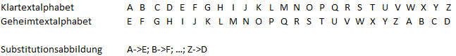

Die Caesar-Verschlüsselung ist eine der einfachsten und bekanntesten Verschlüsselungstechniken. Sie ist nach Julius Caesar benannt, der sie zur Kommunikation mit seinen Generälen benutzte.
Die Caesar-Verschlüsselung ist ein monalphabetisches Substitutionsverfahren.
Bei der Caesar-Verschlüsselung wird jedes Zeichen des Textes um eine bestimmte Anzahl von Stellen im Alphabet verschoben. Der Schlüssel k ist die Schiebeweite, ist also eigentlich eine Zahl, wird jedoch meistens als Buchstabe des Alphabets dargestellt (Die Zahl k ergibt sich dann als Position dieses Buchstaben im Alphabet, 1-relativ)
Diese Verschiebung kann man als monalphabetische Substitution derart darstellen, dass das Substitutionsalphabet das ursprüngliche Alphabet ist, um k Stellen verschoben. Ein Beispiel (k=4):

So wird aus jedem Buchstaben a des Klartextes der Buchstabe a‘, welcher an der Position, die a im Klartextalphabet einnahm, im verschobenen (Geheimtext-) Alphabet steht.
Als Beispiel hierfür wird nun das Wort „CHIFFRE“ mit dem Schlüssel „D“ über dem Alphabet der Großbuchstaben ohne Umlaute oder Sonderzeichen (26 Zeichen) verschlüsselt.
Klartext: “CHIFFRE”; Schlüssel: “D” (d. h. k=4)
Verschlüsselungsergebnis: „GLMJJVI“ (C+4 = G, H+4 = L, …; siehe auch die Alphabet-Abbildung oben, welche ebenfalls für k=4 gilt)
Die Entschlüsselung erfolgt intuitiv durch eine Rückverschiebung der Buchstaben um k. Anders ausgedrückt, wird der inverse Schlüssel i gebildet mit i = Größe(Alphabet) – k, und mit diesem zur Entschlüsselung „verschlüsselt“.